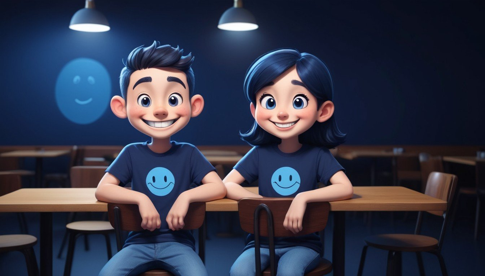

In their lifetime, 85% of individuals will face a breakup.
Who Suffers After Breakup?
According to the research, Men is suffers most after breakup.
Who falls In Love Faster?
In many cases, Men may fall in love quickly than women.
What Factors Contribute to Breakups?
Breakups can be influenced by various factors such as communication issues, incompatible goals, lack of trust, and infidelity.
If Men get succeed in their life then he thinks that he give more facilities, love to their family and their favourite girl but sometimes when girls get succeed in their life then she changes their attitude and feel very independent and then not change the life but change whole Men.
How Do Breakups Impact Mental Health?
Breakups can have varying effects on mental health, leading to feelings of sadness, depression, anxiety, and low self-esteem.
How Can Breakups Influence Career or Academic Performance?
Breakups can affect concentration, motivation, and productivity, potentially impacting career or academic performance.
Can Breakups Lead to Personal Growth?
Yes, breakups can serve as opportunities for personal growth and self-discovery. They provide individuals with the chance to reflect on themselves, learn from their experiences, and make positive changes in their lives.
Young hearts pursue dreams, leaving love behind.
Who Am I?
In a world where everyone chases love, I prefer to focus on my goals. I'm not against love, but I'm more passionate about achieving what I set out to do. Every step I take towards my dreams is a step away from the distractions of romance. For me, true happiness comes from making progress towards my goals, not from being in a romantic relationship.
Prioritize Your Goals Over Friendships

Youth Focus: Dreams Over Relationships
Making friends is undoubtedly valuable, but it's essential to recognize that sometimes, investing too much time and energy into relationships can divert you from your goals. Whether it's friendships or romantic relationships, investing deeply can lead to disappointment when they naturally evolve or drift apart.
Instead of solely focusing on building connections, prioritize your personal and professional goals. Invest in your career, nurture your talents, and pursue your passions. Your goals are what truly shape your future and define who you become. Remember to cherish your family. They are often your most steadfast supporters. And while friendships and romantic relationships are significant, they shouldn't overshadow your aspirations. Love and appreciate the people in your life, but never lose sight of your dreams.
Ultimately, finding love or companionship shouldn't be the primary focus during your school or college years. Instead, use this time to discover yourself, hone your skills, and lay the foundation for a fulfilling future.
"Embrace the journey towards your dreams, even if it means walking away from love and friendships that don't align with your goals."
Creating Action Plans: breaking them down into smaller tasks for easier implementation.
Celebrating Milestones: celebrating small victories along the way.
Adapting to Change: Always be a learner and gain new experiances.
Learning from Failure: Live with growth mindset by viewing failures as opportunities for learning and growth, rather than setbacks.
One Special Tip
We are not here for giving you motivation
When life throws challenges our way, we don't back down. Even when things get tough, we know we're strong enough to keep going. but how many times you fall and stand-up
It's time to change the mindset!
Sometimes, we love our work we follow our heart but we are not capable to achieve that position, we are not capable to achieve that milestone at that time we have to understand that thing. We love them but not expert in that. Everytime, we are not capable to stand-out from world. We accept that reality and finally changes the whole goal. Not choose what you love, that all are only motivated things but if you want success than follow that what world need what your country, city and even your family need observe that thing make a strong goal and that's it. Achieve that goal and live happy life.
Never afraid to give up the things yes give up is not a bad word or bad habit every time. If you give up thing at right time than you make your life meanningful, achieve something, make some money and live life like a successful people but if you stuck in that one thing than you not live happily.
Don't stuck in one thing at young age.
हम भी दरिया है हमें अपना हुनर मालूम है जिस तरफ चल पड़ेंगे उस तरफ रास्ता हो जाएगा
Never afraid to change the path. Be pure, ready for hardwork and achieve.
Linking Paths, Crafting Futures
Networking: Building bridges, forging connections, fueling progress
Networking is the art of building bridges, fostering relationships, and unlocking endless possibilities through shared experiences and collaboration. It's about creating a supportive community where ideas flourish, and dreams take flight.
it's about building meaningful connections that can propel your career. It involves actively engaging with others, listening to their stories, and finding common ground. By nurturing these relationships, you create a network of support, advice, and opportunities that can help you achieve your goals. Whether it's attending networking events or joining professional groups.Networking opens doors and fosters growth.Don't underestimate the power of networking; it could be the key to unlocking your next big opportunity.
How To Build Network?
Attend Networking Events: Participate in industry conferences, workshops, seminars, and local networking events
Attend Meetup Groups: Join Meetup groups related to your interests. These casual gatherings provide opportunities to meet new people and build connections over shared interests.
Stay Visible: After meeting someone new, follow up with a personalized social media accounts and stay active on social media by sharing updates, engaging with others' content, and participating in relevant discussions.
Volunteer or Join Committees: Get involved in volunteer work or join committees within your industry or community organizations.
Maintain Relationships: Nurture your network by staying in touch regularly
How To Impress And Take Help From Your Network?
Cultivate Authentic Connections: Focus on establishing meaningful connections rather than just collecting contacts.
Be Clear About Your Needs: Clearly communicate your goals, aspirations, and challenges to your network so they can better understand how they can help you.
Follow Up and Express Gratitude: After receiving help or support from your network, be sure to follow up with a sincere thank you and update them on the outcome.
Ready For Help: Be proactive in offering help, support, or valuable insights to your network without expecting anything in return.
Seek Feedback and Advice: Don't hesitate to seek feedback or advice from your network when faced with challenges or decisions.
Build Character Not Looks
"Character" means the kind of person you are deep down inside. It's about your values, how you treat others, and the choices you make. It's not about how you look, but about the goodness in your heart. The goodness inside a person is their honesty, kindness, and strength.
How To Build Character?
Integrity : Stay true to your values and principles even when faced with challenges
Try New Things : stepping out of your comfort zone to explore unknown territories. Doing so sparks growth, creativity, and adaptability, enriching life with diverse experiences and discoveries.
Perseverance : Keep going despite obstacles, staying committed to your goals and aspirations.
Meet New Peoples : Engage with diverse individuals, embracing different perspectives and experiences.
Compassion : Show kindness and understanding towards others, offering support and encouragement.
Give Time to Your Hobbies : Devote time to activities you enjoy, it rejuvenates your spirit and fosters creativity, balance, and personal fulfillment.
Resilience : Bounce back from setbacks, learning and growing stronger through adversity.
Be Brave : Stand For Right, Accept Wrong : Show courage by doing what's right and facing consequences for mistakes, it shows integrity and accountability.
Simplicity : Keep things simple and clear in your thoughts, actions, and how you live. It helps make life easier, more efficient, and calmer in a complicated world.
Conclusion
Physical attractiveness may fade with time, good character traits such as integrity, empathy, resilience, and kindness endure and define a person's true essence. Focusing on building character fosters personal growth, strengthens relationships and contributes positively to society, it makes a bigger difference than just looking good. These qualities stay with us and affect how we live our lives and treat others. So, working on our character makes life more fulfilling and meaningful.
Embracing Solo Exploration
Embrace Solo Adventures
Discover the thrill of exploring new horizons, conquering challenges, and embracing self-discovery along the way. From solo travels to trying new hobbies or pursuing personal passions, venturing out on your own opens doors to unparalleled experiences and growth. Solo adventures are not just journeys of exploration, they are transformative odysseys that ignite your spirit and propel you towards your goals with newfound confidence and resilience.
Solo Dining: An Individual Banquet
When you walk into the restaurant, you smell the delicious food and feel the cozy atmosphere. Sitting alone at your table, you get to choose from the menu at your own speed, enjoying your favorite tastes or trying something new. With each bite, you become part of the food adventure, enjoying the freedom to enjoy every moment without any interruptions. As the evening goes on, you feel comforted by your own thoughts, sipping your drink and enjoying every tasty dish, knowing that this time alone is a special treat for yourself.
A Solo Theatre Adventure
Finding your seat in the dimly lit auditorium, you eagerly await the start of the show, waiting for storytelling, music, and drama. With each scene, you experience a range of emotions and connect with the performance on a deeply personal level.
Mastering Body Language: Be Attractive
Speak without saying a word through confident body language.
Eye Contact:
Make direct eye contact to show attentiveness and confidence in social interactions, fostering trust and connection with others.
Smile Naturally:
Smile genuinely and naturally to appear approachable and friendly, creating a positive impression on social interactions.
Active Listening:
Demonstrate active listening by nodding and using facial expressionsto show understanding and interest, building rapport and trust with others.
Confident Walk:
Walk confidently with purpose,taking steady steps and maintaining a relaxed stride to show self-assurance
Personal Space:
Respect personal space boundaries by maintaining an appropriate distance from othersdemonstrating respect and consideration in social interactions.